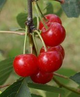

Употребление вишни кислых сортов Монморанси изменяет метаболизм мочевой кислоты в организме, снижает уровень С-реактивного белка в сыворотке крови и облегчает суставной синдром при подагре.
Уже в течение достаточно долгого времени изучается эффективность сока кислой вишни для купирования болей различного генеза — от подагры и боли в суставах, связанной с артритом, до мышечных болей, обусловленных физической нагрузкой.
Недавнее небольшое исследование, проведённое учёными из Нортумбрийского университета (Великобритания) и опубликованное в журнале Journal of Functional Foods, показало, что употребление вишни кислых сортов Монморанси изменяет метаболизм мочевой кислоты в организме, что может облегчать болевой синдром в суставах. В исследовании также было установлено повышение уровня специфических антоцианов, в частности, CYA-3-O-GluRut, в сыворотке крове после употребления сока кислой вишни.

В простом слепом рандомизированном двухфазном перекрестном исследовании изучалась биодоступность антоцианинов после употребления 2 различных доз вишнёвого сока. В проекте приняли участие 12 здоровых добровольцев (средний возраст 26 лет). В ходе исследования изучались 2 дозы вишневого сока — участники исследования в течение двух дней утром и перед ужином принимали вишнёвый сок из вишни сорта «Монморанси» в дозе 1 унция (~30 мл) концентрата сока (смешивали со 100 мл воды, что эквивалентно употреблению 90 вишен) или 2 унции (~60 мл) концентрата сока также смешивали со 100 мл воды. Между 2 фазами исследования был период отмывки в течение 10 дней. Образцы крови и мочи у участников исследования забирались непосредственно перед и на протяжении 48 ч после употребления вишнёвого сока, причём образцы забирались несколько раз.
Как оказалось, употребление вишнёвого сока приводит к снижению уровней мочевой кислоты и С-реактивного белка в сыворотке крови, а выделение мочевой кислоты с мочой увеличивается после употребления каждой дозы вишнёвого сока. Следует отметить, что данный эффект не зависел от принятой дозы вишнёвого сока, т.е. 30 мл сока оказывали такой же эффект, как и 60 мл.
Высокий уровень мочевой кислоты приводит к развитию подагры (подагрического артрита), которая проявляется выраженным болевым синдромом и воспалением различных суставов (сустав большого пальца стопы, другие суставы рук и ног), что связано с отложением в них солей мочевой кислоты.
По мнению авторов публикации, необходимо проведение дополнительных исследований для подтверждения полученных результатов. Тем не менее, это исследование свидетельствует о полезных свойствах вишни кислых сортов для профилактики возникновения и купирования болей в суставах при подагре.
Phillip G. Bella, David C. Gazeb, Gareth W. Davisonc, Trevor W. Georgea, Michael J. Scotterd, Glyn Howatson.
Montmorency tart cherry (Prunus cerasus L.) concentrate lowers uric acid, independent of plasma cyanidin-3-O-glucosiderutinoside
Journal of Functional Foods. 2014; 11: 82-90.